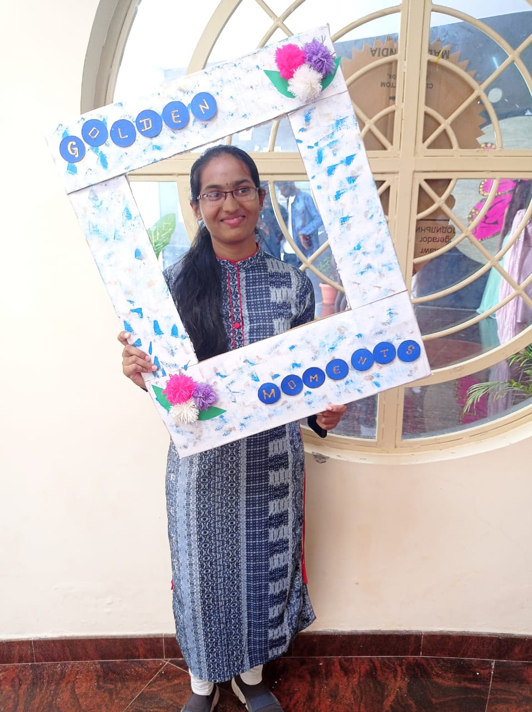

RANJITHA D

Email ID: ranjithadjan6@gmail.com
QUALIFICATIONS
2016-17: CBSE 10th, 10 CGPA
2018-2019: KARNATAKA BOARD 11th, 89%
2019-2025: ADICHUNCHANAGIRI UNIVERSITY;DOCTOR OF PHARMACY
PUBLICATIONS
ACHIEVEMENTS
- First place in Patient Counselling competition held on account of Pharmacovigilance Week 2023, SACCP
- Secured second place in Debate competition held on account of World Pharmacists Day, 2023
HOBBIES
- Coding
- Singing
- Painting
- Cycling
DATE: 4/11/2023